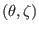
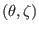
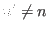
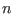
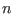
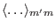

The elements of matrix ,  , , and
, , and  are two dimensional differential
operators about
, which can be called surface differential
operators. As discussed above, we use Fourier expansion to treat the
differential with respect to
are two dimensional differential
operators about
, which can be called surface differential
operators. As discussed above, we use Fourier expansion to treat the
differential with respect to  and
and  . In this method, we need to
take inner product between different Fourier harmonics. Noting this, we
recognize that it is useful to define the following inner product operator:
. In this method, we need to
take inner product between different Fourier harmonics. Noting this, we
recognize that it is useful to define the following inner product operator:
where  is a surface differential operator of the following form
is a surface differential operator of the following form
Because both of the coefficients in expression (175) are independent
of , it is ready to see that, for ,
. This indicates that  with different  are decoupled
with each other.
with different  are decoupled
with each other.
For notation ease,
is denoted by
when , i.e.,
[For the special case that is an algebra operator
,
equation (5) can be reduced to
where
is independent of because, as we will see
below, is determined by equilibrium quantities (for example,
), which is axisymetrical.
Expression (176) is a Fourier integration over the interval
, which can be efficiently calculated by using the FFT algorithm (details
are given in Chapter 13.9 of Ref. [5]).] After using the
Fourier harmonics expansion and taking the inner product, every element of the
matrices , and becomes a
matrix, where  is the
total number of the Fourier harmonics included in the expansion. Taking the
matrix
is the
total number of the Fourier harmonics included in the expansion. Taking the
matrix
 as an example, it is discretized as
as an example, it is discretized as
where
,
,
,
. Next, let us derive the expressions of
,
,
,
. The goal of he derivation is to perform the
surface differential operators so that all the inner products take the form of
the Fourier integration given by Eq. (176). For the convenience of
reference, the expression of matrix
is repeated here:
Then
is written as
|
 |
|
|
| |
 |
|
(178) |
Making use of Eq. (173), equation (178) is written as
Note that all the operators within the inner operator
 of the above equation are algebra operators. Therefore the
calculation of the inner product
reduces to
the calculation of the Fourier integration (176), which can be
efficiently calculated by using the FFT algorithm (it is thus implemented in
GTAW). Similarly, the discrete form of the other matrix elements are written
respectively as:
|
|
|
|
| |
|
|
(180) |
Next, consider the discrete form of the normalized matrix, which is given
by
Using Eqs. (139) and (159), we obtain
Next, we derive the discrete form of matrix and . Before doing this, we
examine matrix equation (161), which can be written as
Using the expression of the operator
 , i.e.,
, i.e.,
equation (188) is written as
Define the first matrix on the r.h.s of the above equation as
,
then
, and
 and
are given by
and
are given by
Then
The formula for calculating the right-hand side of Eq. (194) is
given in Sec. 8.6.
|
|
|
(195) |
|
|
|
(197) |
|
|
|
|
| |
|
|
(198) |
Subsections
yj
2015-09-04